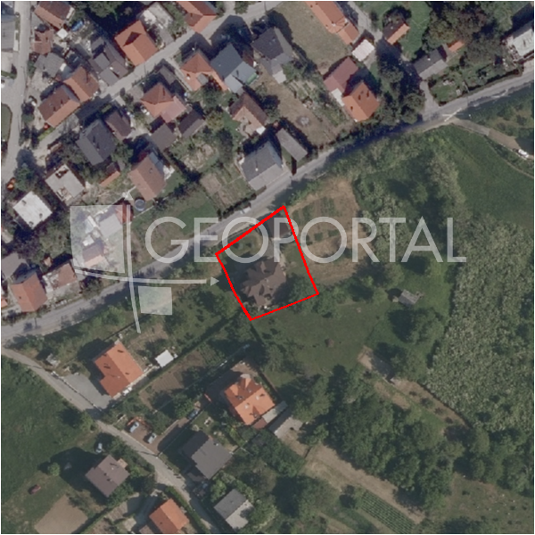

#9617 · GRAĐEVINSKO ZEMLJIŠTE, PRODAJA, ZAGREB, MARKUŠEVEC, 940 m2
Markuševec, Podsljeme, Grad Zagreb · zemljiste · njuskalo · status active · oglas ↗
Ocjena
- Score
- 57 rule 57 · LLM – · 12.09.2026.
- RLV
- 410.000 € (459 €/m²) · ratio 6,04
- Ukupna investicija
- 2,81 M€
- GBP
- 1.341 m²
- Feedback
- –
- CRM
- –
Oglas
- Cijena
- 68.000 € (72 €/m²)
- Površina
- 940 m² · DKP 894 m² (odstupanje -4,9 %)
- Prodavatelj
- agencija · Starling nekretnine
- Prvi put
- 11.09.2026. · zadnje 11.09.2026. · 0 d na tržištu
Povijest cijene
| Datum | Cijena |
|---|---|
| 11.09.2026. | 68.000 € |
Flagovi
zgrade_bez_rusenja zgrade na čestici bez spomena rušenja (−10)zone_uncertainty zona nije pregledana (reviewed: false) (−5)
llm_pending LLM ekstrakcija/ocjena nedostupna
Komponente score-a
| rlv | {'gbp': 1340.73, 'kis': 1.5, 'nkp': 1099.3986, 'noi': None, 'rlv': 410383.4627739127, 'ratio': 6.035050923145775, 'value': None, 'phases': 1, 'profile': 'zagreb_visestambeno', 'gdv_neto': 3781931.1839999994, 'cost_soft': 88488.18000000001, 'gdv_bruto': 4727413.9799999995, 'kis_known': True, 'total_inv': 2808509.93, 'cost_build': 2212204.5, 'cost_other': 435737.25, 'cost_sales': 141822.41939999998, 'demolition': False, 'gbp_source': 'kis', 'rlv_per_m2': 459.1343478260865, 'parcel_area': 893.82, 'parcelation': False, 'roi_on_cost': 0.2960996597224064, 'profit_at_ask': 831598.8345999995, 'cost_demolition': 0.0, 'total_inv_phase': 2808509.93, 'parcel_area_effective': 893.82, 'sale_price_per_m2_nkp': 4300.0} |
| hard | [] |
| info | ['llm_pending'] |
| rubric | {'permits': {'max': 5.0, 'detail': {'permit': 'none'}, 'points': 0.0}, 'location': {'max': 15.0, 'detail': {'source': 'benchmark:seed:Podsljeme', 'sale_price_per_m2_nkp': 4300.0}, 'points': 5.62}, 'physical': {'max': 4.0, 'detail': {'slope_pct': 17.07, 'road_access': 'yes', 'slope_points': 1.293}, 'points': 3.29}, 'liquidity': {'max': 3.0, 'detail': {'n_cuts': 0, 'points_cut': 0.0, 'points_days': 0.008333333333333333, 'seller_type': 'agencija', 'points_fresh': 0.5, 'price_cut_pct': None, 'days_on_market': 1, 'points_private': 0}, 'points': 0.51}, 'rlv_ratio': {'max': 25.0, 'detail': {'rlv': 410383, 'ratio': 6.035, 'asking_price': 68000.0}, 'points': 25.0}, 'ticket_fit': {'max': 10.0, 'detail': {'asking_price': 68000.0}, 'points': 2.91}, 'zone_quality': {'max': 8.0, 'detail': {'no_upu': True, 'source': 'gis', 'zone_class': 'mjesovito_pretezito_stambeno', 'zone_ideal': True, 'gp_uredjeni': True}, 'points': 6.0}, 'profit_potential': {'max': 20.0, 'detail': {'roi_on_cost': 0.296, 'profit_at_ask': 831599}, 'points': 18.65}, 'price_vs_benchmark': {'max': 10.0, 'detail': {'source': 'auto:Podsljeme', 'deviation': 0.548, 'ask_eur_m2': 72, 'benchmark_eur_m2': 160.0}, 'points': 10.0}} |
| weights | {'llm': 0.4, 'rule': 0.6, 'model': 0.0} |
| penalties | {'zone_uncertainty': 5, 'zgrade_bez_rusenja': 10} |
| raw_score | 72,0 |
| rlv_notes | [] |
| flag_notes | {'max_gbp': 1341, 'total_inv': 2808510, 'zone_code': 'M1', 'zone_class': 'mjesovito_pretezito_stambeno', 'zone_source': 'gis', 'zone_reviewed': False, 'commercial_pct': 0.0, 'buildings_share': 0.161, 'commercial_source': 'zone_rule'} |
| caps_applied | [] |
GIS
- Čestica
- k.o. 335347, k.č. 12847/1 (pin_buffer, 0,82); k.o. 335347, k.č. 11356 (pin_buffer, 0,81); k.o. 335347, k.č. 11419 (pin_buffer, 0,81)
- Zona
- M1 (mjesovito_pretezito_stambeno) · NIJE pregledana
- kig / kis / katnost
- 0,40 / 1,50 / Po+P+3+Pk
- GP / UPU
- uredjeni · UPU ne
- Pristup / nagib
- yes · 17,1 % (max 34,7 %)
- More
- –
- Zaštite
- Natura ne · zaštićeno ne · kulturno dobro ne
- Zgrade na čestici
- 16 %
- Match
- 0,82
Karta
Ortofoto (DOF)

RLV kalkulacija — pretpostavke
| gbp | {'value': 1340.73, 'source': 'kis'} |
| kis | {'value': 1.5, 'source': 'gis'} |
| soft_pct | {'value': 0.04, 'source': 'profil'} |
| nkp_ratio | {'value': 0.82, 'source': 'profil'} |
| cost_other | {'value': 435737.25, 'source': 'profil: doprinosi+uređenje po m² GBP, financiranje+rezerva % gradnje'} |
| parcel_area | {'value': 893.82, 'source': 'dkp'} |
| asking_price | {'value': 68000.0, 'source': 'oglas'} |
| margin_on_cost | {'value': 0.15, 'source': 'profil'} |
| build_cost_per_m2_gbp | {'value': 1650.0, 'source': 'profil'} |
| sale_price_per_m2_nkp | {'value': 4300.0, 'source': 'benchmark:seed:Podsljeme'} |
| transfer_tax_and_acquisition | {'value': 0.06, 'source': 'profil'} |
Ekstrakcija iz oglasa
| utilities | ['struja', 'voda', 'plin', 'kanalizacija'] |
| zone_claim | S |
Opis oglasa
GRAĐEVINSKO ZEMLJIŠTE, PRODAJA, ZAGREB, MARKUŠEVEC, 940 m2 Prodaje se građevinsko zemljište površine 940 m2. Neposredno pored zemljišta, nalaze se priključci struje, vode, plina i kanalizacije. Zemljište je odlično prometno povezano. Parcela se nalazi u neposrednoj blizini javnog prijevoza. Svi sadržaji se nalaze u neposrednoj blizini. Zona S - stambena namjena. Kontaktirajte nas za više informacija. Cijena: 68.000,00 EUR ID KOD AGENCIJE: 9360 Vanja Vuković Suradnik u procesu obuke Mob: +385 91 44 55 181 Tel: 01 779 23 10 E-mail: vanja@starling.hr starling.hr